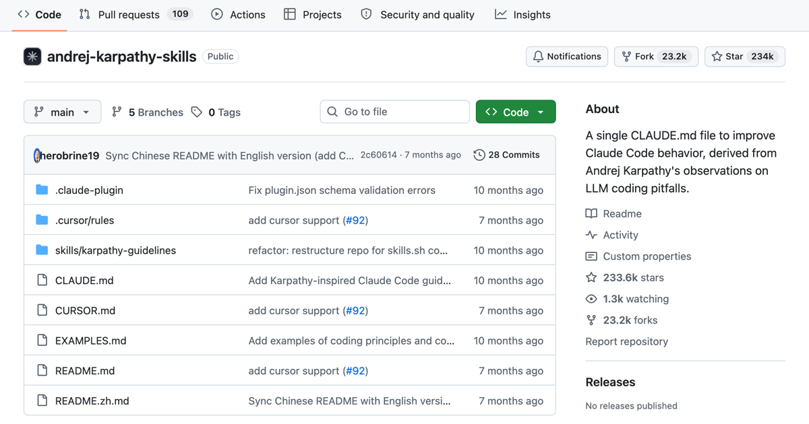
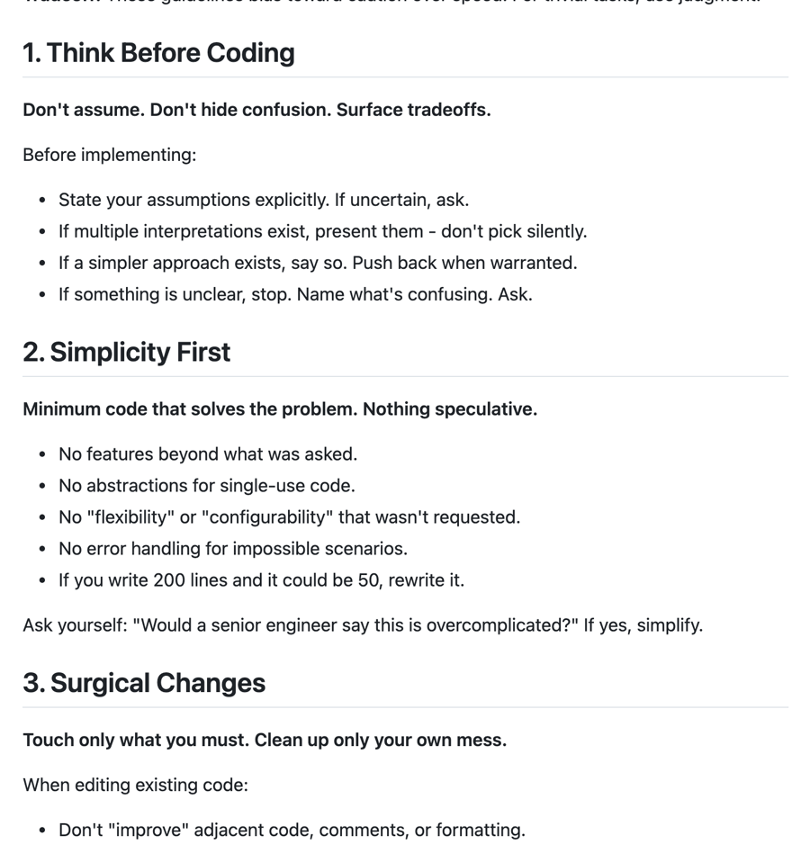

From the reel · Claude Code
Four rules that stop Claude from guessing. One file.
Andrej Karpathy wrote down the mistakes AI makes when it writes code. A developer turned those notes into a single CLAUDE.md with four rules. It has 233K stars on GitHub, installs with one command, and works in Cursor too.

Where the rules
come from.
In January 2026, Andrej Karpathy posted his notes after weeks of coding with Claude. He described what the models still get wrong: they "make wrong assumptions on your behalf and just run along with them without checking", they write "a bloated construction over 1000 lines when 100 would do", and they change code they were never asked to touch.
The developer forrestchang turned those notes into one instruction file for Claude Code. Karpathy did not write the file himself; it is built from his post. Each rule answers one of the problems he named.
The four rules
In plain English.
Ask, don't guess
Claude states its assumptions, shows you the options when a request is unclear, and stops to ask when it is confused.
Write less code
No extra features, no abstractions for one-off code. If 200 lines could be 50, it rewrites them.
Touch only what you asked for
No "improving" nearby code or formatting. Every changed line should trace back to your request.
Test until it works
Claude turns the task into something it can check, such as a test that must pass, and loops until it does.

Install
Pick one way.
One command
Run this in your project folder. It saves the file as CLAUDE.md, and Claude Code reads it automatically.
curl -o CLAUDE.md https://raw.githubusercontent.com/forrestchang/andrej-karpathy-skills/main/CLAUDE.md
Add the rules to the end
This keeps your own file and appends the four rules below it.
echo "" >> CLAUDE.md && curl https://raw.githubusercontent.com/forrestchang/andrej-karpathy-skills/main/CLAUDE.md >> CLAUDE.md
Install as a Claude Code plugin
Run these two commands inside Claude Code, one after the other.
/plugin marketplace add forrestchang/andrej-karpathy-skills
/plugin install andrej-karpathy-skills@karpathy-skills
Works there too
The repository ships a Cursor rule at .cursor/rules/karpathy-guidelines.mdc. Setup steps are in CURSOR.md.
Is it working?
Four signs.
Smaller diffs
Only the change you asked for shows up.
Simple the first time
Fewer rewrites because something was overbuilt.
Questions come first
Claude asks before it builds, not after it gets it wrong.
Good to know: the file says these rules lean toward caution over speed, so for tiny tasks Claude may ask more than you need. The repository has no licence file listed, so check with the author before reusing it in a commercial product. Last month's advice still holds: keep your CLAUDE.md short. This one is 65 lines.
Came here from the Reel?
Here is your RULES link.
You commented RULES for this page. Copy the one-line command above, run it in your project, and start your next Claude Code session.